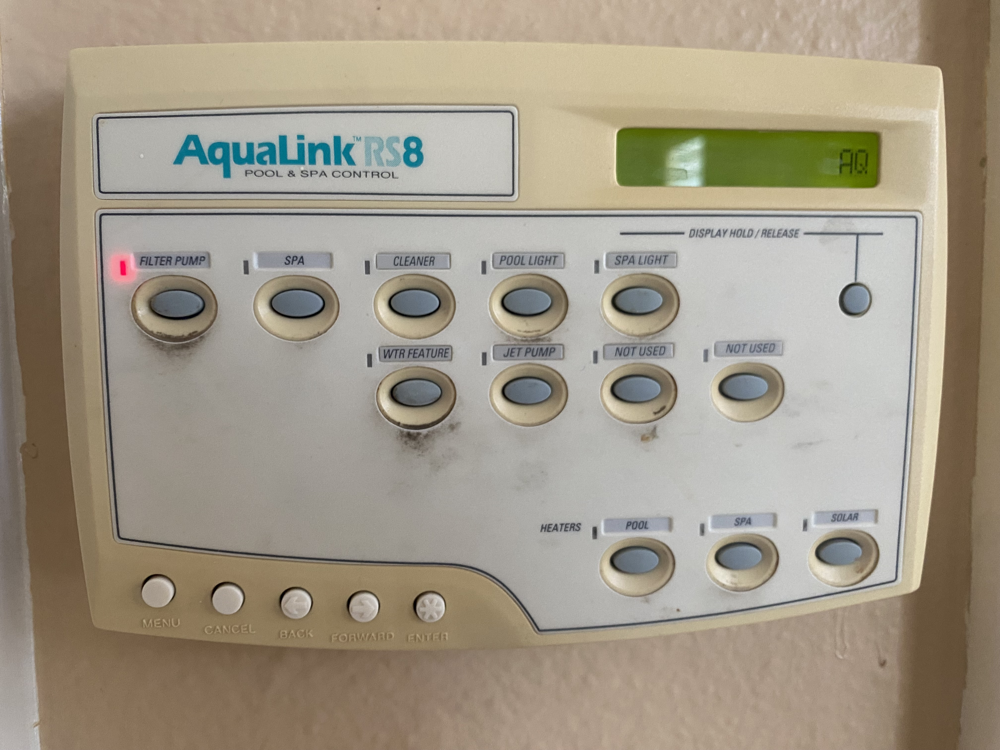
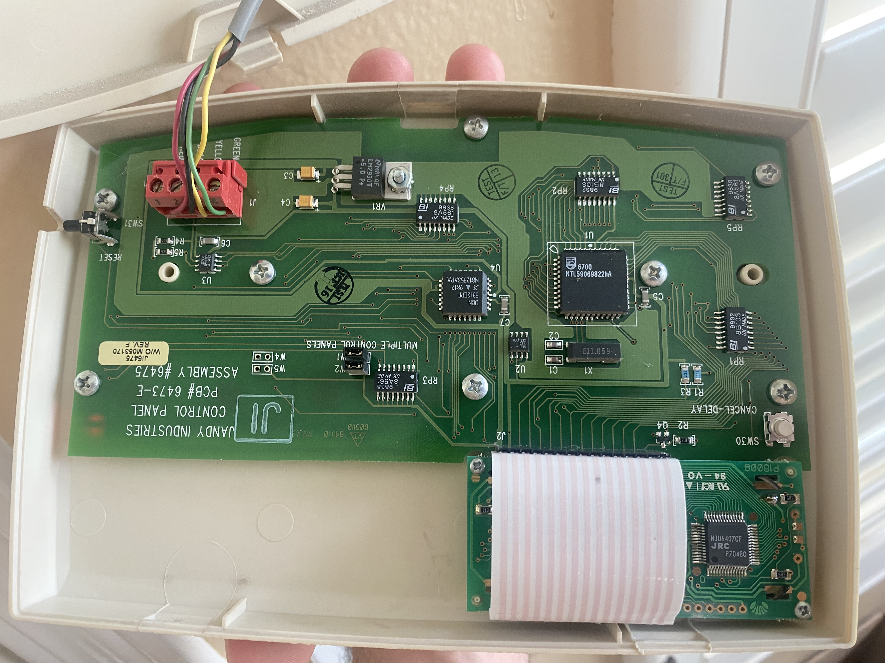
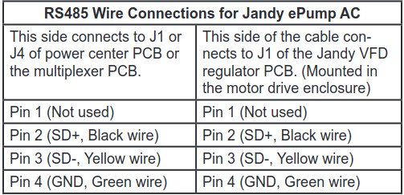
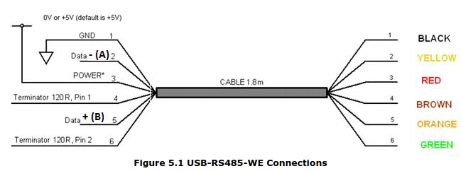
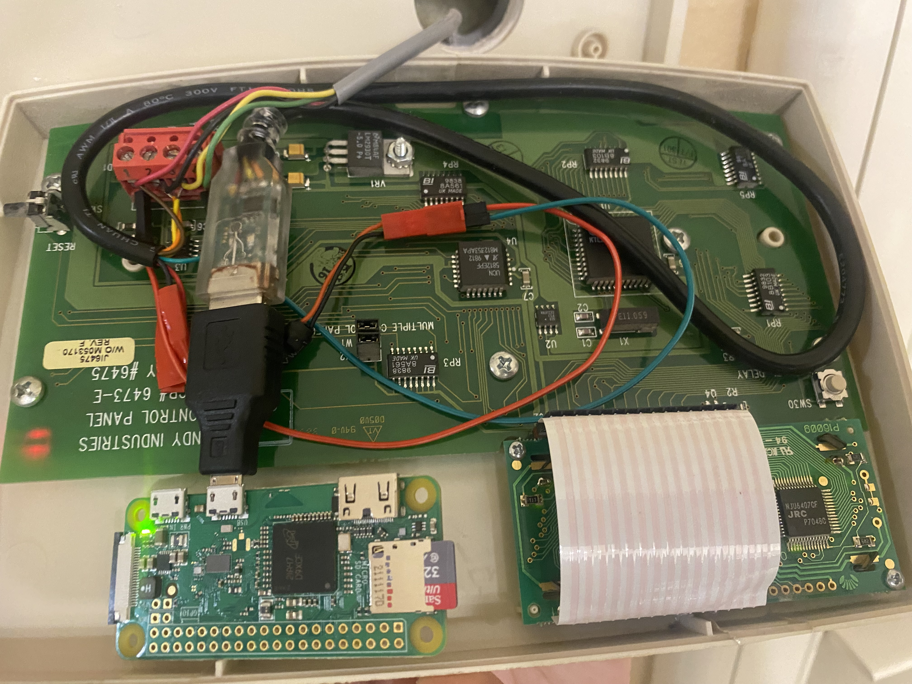

AqualinkD Project
Introduction
The purpose of this project is to to control the pool and spa features from your phone, wherever you are. Imagine you have a long day at work... and you want to get the jacuzzi nice and steamy by the time you get home :).

Hardware
We'll be using a Raspberry Pi Zero W (RPI) to host our web app and communicate with the Aqualink Control Panel. Before hooking up the RPI, make sure you can SSH into it [SSH into a Raspberry Pi ].
The control panel has 4 wires: Data +, Data -, GND, and 10V VCC.

The wires make up the RS485 communication protocol. A USB-RS485 cable adapter can be used to communicate between the panel and the RPI. The cable will also provide power to the RPI through a 5V voltage regulator.
Jandy's RS485 Pin Connector Colors

FTDI USB-RS485 Cable Connector Colors

Compile into a table...
| Function | Jandy Color | Jandy Pin | RS485 Color |
|---|---|---|---|
| Data + | BLACK | 2 | ORANGE |
| Data - | YELLOW | 3 | YELLOW |
| 10V VCC | RED | 1 | RED |
| GROUND | GREEN | 4 | BLACK |
RPI connected:

Finally, ssh into the raspberry pi and follow the installation directions
You should now be able to access the AqualinkD web app from your browser, as shown below:

References
AqualinkD Github Project
AquaLink RS Installation Manual
FTDI USB-RS485 DataSheet
Tags
#projects